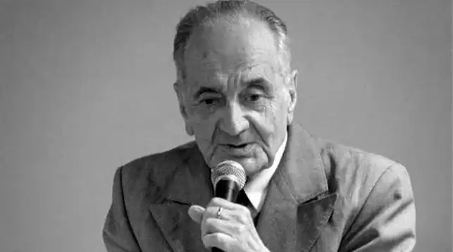

Алексін Анатолій Георгійович — письменник, сценарист. Справжнє прізвище — Гоберман. Народився в Москві 3 серпня 1924 р., помер 1 травня 2017 в Люксембурзі. Закінчив Московський інститут сходознавства (1950).
Збірники повістей і оповідань про дитинство і юність в їх зв'язку зі світом дорослих: "А тим часом десь…" (1967), "Мій брат грає на кларнеті" (1968), "Дійові особи та виконавці" (1975), "Пізня дитина" (1976), "Третій у п'ятому ряду" (1977), "Божевільна Євдокія" (1978), "Сигнальники та сурмачі" (1985) і ін
Твори Алексіна переведені на сорок вісім мов, їх тираж видань перевищив сто мільйонів примірників. Державна премія СРСР (1978). В кінці 80-х емігрував до Ізраїлю. Народився 3 серпня 1924 в Москві, в сім'ї активного учасника Громадянської війни, репресованого в 1937 році. У дитинстві виступав в піонерській пресі з віршами (зібрані в книзі Ріжок, 1951; спільно з С. Баруздиным). У роки Великої Вітчизняної війни працював на будівництві; в 1950 закінчив індійське відділення Московського інституту сходознавства. Тоді ж видав збірку повістей Тридцять один день, схвалений К. Р. Паустовським і відразу визначив Алексіна як творця т. н. "юнацької повісті". Численні твори Олексина (повісті Саша і Шура, 1956; Незвичайні пригоди Севи Котлова, 1958; Говорить сьомий поверх, 1959; Коля пише Оле, Оля пише Колі, 1965; Пізня дитина, 1968; Дзвоніть і приїжджайте!, 1970; Третій у п'ятому ряду, 1975; Божевільна Євдокія, 1976; Серцева недостатність, 1979; Домашній рада, Івашов, Щоденник нареченого, всі 1980;Здорові і хворі, 1982; Прости мене, мамо…, 1989, та ін, а також п'єси, як правило, інсценування повістей, Мій брат грає на кларнеті, 1968; У країні вічних канікул, 1970; Зворотну адресу, 1971; Десятикласники, 1974; Підемо в кіно, 1977; Пізня дитина, 1983, і ін) – це безпосередні і жизнеподобные, не позбавлені мелодраматизму і сентиментальності, викладені, як правило, від першої особи, оповідання про зіткненні дітей і підлітків з світом дорослих. Твори Алексіна користуються популярністю в силу драматургічної стрімкості їх побудови, гостроті колізій, психологічної та бытописательской спостережливості, доброго гумору, актуальних сюжетів, відомим персонажам і обставинам (сім'я, школа, піонерський табір, військова гра, перша любов, дитячий хор – повість Позавчора і післязавтра, 1974; трупа юнацького театру – повість Дійові особи та виконавці, 1975; спогади про роки сталінської репресії – повість Іграшка, 1988; літературна та життєва "проба" підлітка – Дуже страшні історії: Детективні повісті, які склав Алік Дєткін, 1969-1992). Колективний портрет юних поколінь 1950-1980-х років, запропонований Алексиным, не позбавлений ідеалізації – і в той же час об'єктивного морального діагнозу, поставленого з позицій морального максималізму, що відкидає (в дусі старанно культивованої в радянській ментальності 1960-1970-х років "романтики") розважливість, вузький прагматизм, егоїзм, черствість і себелюбство. Визнаний і публікою і критикою (у т. ч. зарубіжної – твори Алексіна видані в багатьох країнах світу), письменник вів активну літературно-громадську діяльність (секретар СП РРФСР у 1970-1989, один з організаторів дитячих і юнацьких журналів, член редколегії журналу "Юність", президент асоціації "Світ – дітям світу" і т. п.); удостоєний премії Ленінського комсомолу (1970, за сценарій документального фільму Право бути дитиною), Державних премій РРФСР (1974, за п'єси, поставлені на сцені Центрального дитячого театру) і СРСР (за ряд повістей), а також кількох міжнародних премій і відзнак. У 1982 Алексин був обраний членом-кореспондентом Академії педагогічних наук СРСР. З 1993 письменник живе в Ізраїлі, де видав роман-хроніку про долю єврейської сім'ї в Росії 20 ст. Сага про Певзнерах (1994), книгу мемуарів Перегортаючи роки (1997) та інші твори, основні теми яких пов'язані з російською дійсністю. З 2011 року жив в Люксембурзі, де Тетяна і Анатолій Олексин возз'єдналися з дочкою Оленою Зандер. 1 травня 2017 помер в Люксембурзі, на 93-му році життя. Похований в Москві на Кунцевському кладовищі поруч з батьками.